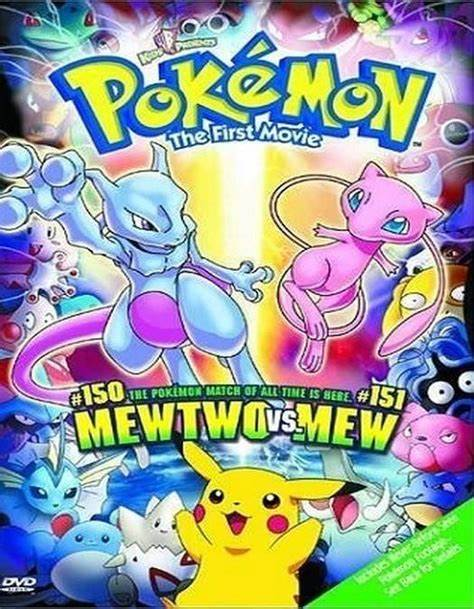
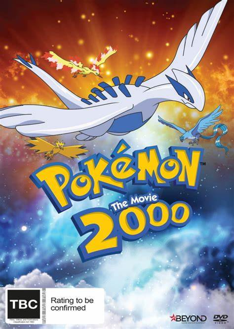
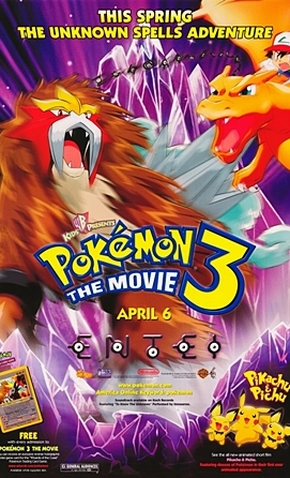

Bem Vindo ao site Mestre Pokémon
Pokémon: O Filme - Mewtwo Contra-Ataca (2000)

o filme ocorre durante a primeira temporada Liga Indigo
Em Pokémon: O Filme - Mewtwo Contra-Ataca, cientistas trabalham para criar o mais forte e poderoso pokémon de todo o planeta....
Clique aqui
Pokémon o Filme 2000: O Poder de Um

O segundo filme ocorre durante a Liga das Ilhas Laranjas
Ash, treinador de pokémon, e seus companheiros têm a difícil tarefa de restaurar o equilíbrio das forças naturais na Terra para impedir que uma grande catástrofe aconteça. Para isso, precisam recuperar três pokémon que estão nas mãos de um vilão...
Clique aqui
Pokémon 3 o Filme: O Feitiço dos Unown

O terceiro filme ocorre durante a temporada Jornada Johto
Pokémon 3: O Feitiço dos Unown acompanha o jovem treinador pokémon Ash Ketchum e seus amigos partem rumo à bela montanha de Greenfield...
Clique aqui